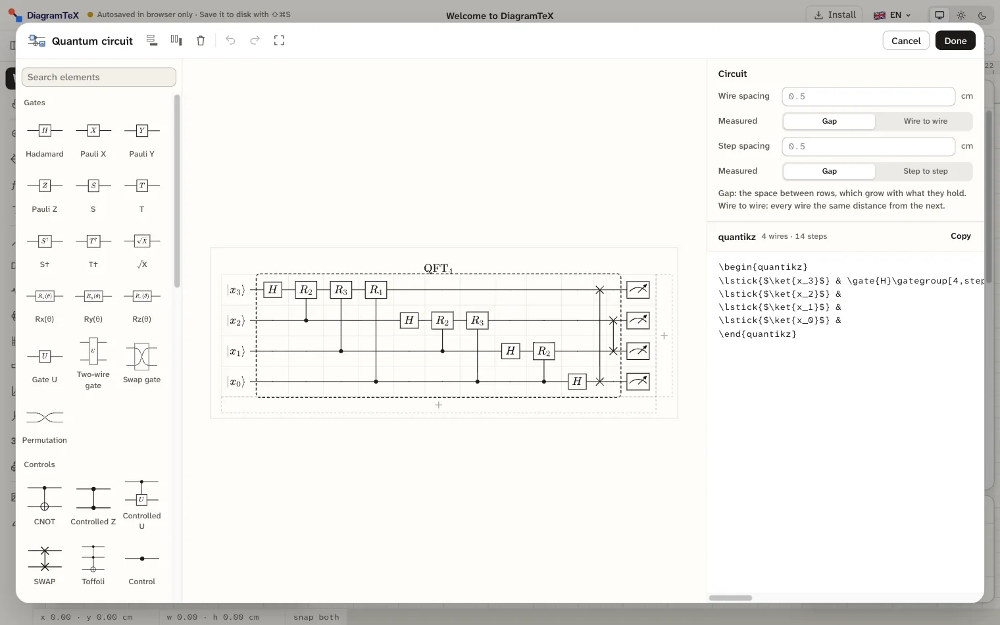

DiagramTeX/quantikz editor
Quantum circuits for LaTeX
quantikz editor: draw the quantum circuit, copy the LaTeX
Type gates onto a grid of wires, drag controls to their targets and group gates with a box. DiagramTeX writes the quantikz code as you go, ready to paste into Overleaf or any LaTeX document.
- Free and open source
- Works offline
- No sign-up
- Nothing is uploaded

quantikz code on the right.How to draw a quantum circuit
- Add a Quantum circuit block: open DiagramTeX, click the cube on the left rail, pick Quantum and click the canvas. Double-click the block to open its editor.
- Type gates: click a cell and type H X Y Z S T U, C for a control, O for an open control, + for a target or M for a meter. The cursor steps right, so a whole wire is quick to type.
- Link controls: drag a control’s blue handle to another wire.
- Add wires and steps: drop a gate on the dashed row or column, or right-click a cell.
- Copy the code: press Done, then CtrlE (⌘E on a Mac) and Copy.
Example: Four-qubit quantum Fourier transform with measurement
This is the code DiagramTeX writes for the circuit in the picture above. The first lines name what to load.
quantikz snippetOpen it in DiagramTeX and edit it
% Requires: \usepackage{tikz} \usetikzlibrary{quantikz2}
% (or \usepackage{quantikz} in place of \usetikzlibrary{quantikz2})
\begin{tikzpicture}[x=1cm, y=1cm]
\node[font=\large] at (9.41,-4.57) {\pgfinterruptpicture%
\begin{quantikz}
\lstick{$\ket{x_3}$} & \gate{H}\gategroup[4,steps=12,style={dashed,rounded corners,inner xsep=2pt},label style={label position=above}]{QFT$_4$} & \gate{R_2} & \gate{R_3} & \gate{R_4} & & & & & & & \swap{3} & & \meter{} \\
\lstick{$\ket{x_2}$} & & \ctrl{-1} & & & \gate{H} & \gate{R_2} & \gate{R_3} & & & & & \swap{1} & \meter{} \\
\lstick{$\ket{x_1}$} & & & \ctrl{-2} & & & \ctrl{-1} & & \gate{H} & \gate{R_2} & & & \targX{} & \meter{} \\
\lstick{$\ket{x_0}$} & & & & \ctrl{-3} & & & \ctrl{-2} & & \ctrl{-1} & \gate{H} & \targX{} & & \meter{}
\end{quantikz}%
\endpgfinterruptpicture};
\end{tikzpicture}The quantikz environment inside can also go straight into your document on its own, with \usepackage{quantikz} in the preamble.
What the quantum circuit editor does
- Gates by keyboard: single-qubit gates, controls, open controls, targets and meters, each one key.
- Multi-qubit gates: drag a gate’s top or bottom bar to span several wires.
- Gate groups: drag across cells, right-click and choose Group Selection for a dashed gate group.
- Classical wires: classical wires after a meter, and classically controlled gates.
- Code both ways: the code beside the circuit follows every change, and the circuit follows the code when you edit it.
- Bring circuits in: paste a
quantikzenvironment onto the canvas and it becomes a block you can edit. - Just the circuit: Quick mode makes one circuit on its own and copies it as PNG, SVG or TikZ, for slides or chat.
Questions
- Is the quantikz editor free?
- Yes. DiagramTeX is free and open source (GNU AGPLv3), with no account, no paid tier and no ads. The code it writes for you is yours to use however you like.
- quantikz or quantikz2?
- The code loads the TikZ library
quantikz2, which ships with current TeX Live and Overleaf. On an older installation, use\usepackage{quantikz}instead, as the code’s comment says. - Does it work with Overleaf?
- Yes. Copy the code into your project and add what its first lines name. The LaTeX dialog can also download a
.zipto upload to Overleaf. - Is my circuit uploaded anywhere?
- No. DiagramTeX runs in your browser and keeps your files there. Once it has loaded, it also works offline.
- Can I edit quantikz code I already have?
- Yes. Paste it onto the canvas or into the editor’s code. What the editor can show becomes gates you can move; anything else is kept and exported as written.